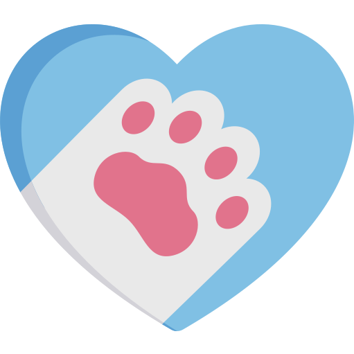
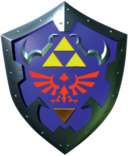
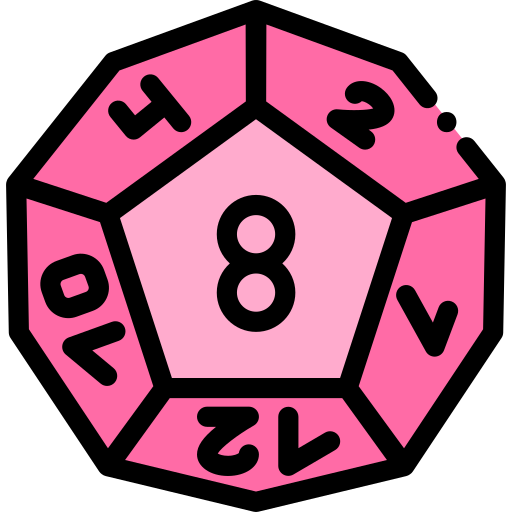

Voici une liste non ordonnée des choses que j'apprécie!
{print('L'informatique');}
L'informatique... C'est passionnant (et aussi très vaste!). Tout bouge, change, s'améliore, tout le temps. C'est collaboratif, ou alors personnel, accessible à pratiquement tout le monde... Que demander de plus ! À chaque fois que j'apprend un nouveau langage et/ou code quelque chose j'adore ça. Alors oui quand ça ne marche pas, qu'on ne trouve pas l'erreur, et que tout part dans tous les sens c'est très frustrant. Mais après avoir testé, demandé et enfin résolu les problèmes, on est fier de nous. Pour résumer : l'informatique ça déchire.
 Les (et surtout mon) chats
Voici mon chat ! Elle s'appelle Carbone, et c'est le plus beau chat du monde (tout à fait subjectivement). Plus sérieusement, avec l'animation de chat qui roule vous avez peut-être pu vous rendre compte que j'aime beaucoup ces félins. Mais en fait j'aime beaucoup la plupart des animaux, et je pense qu'il est très important de les respecter, eux ainsi que la nature en général.
 La musique et le piano
La musique et le piano
La musique fait partie inhérente de ma vie. Quand je travaille de mon côté j'aime beaucoup avoir de la musique sur les oreilles, quand je m'endors je met de la musique, quand je fais à manger je met de la musique...Évidemment quand je suis avec des gens je n'ai pas de casque sur les oeilles! À mes heures perdues j'aime bien jouer de mon piano pour me défouler un bon coup.
Les Jeux Videos
Comment? Moi, un geek? Oui! J'ai commencé à jouer aux jeux vidéos assez jeune, sur la vieille Nintendo 64 de mon oncle. Puis il nous a offert à moi et mes sœurs sa GameCube. Puis nos parents nous ont offerts la Wii... Eh oui j'ai grandi qu'avec des consoles Nintendo! Même si aujourd'hui je possède la Nintendo Switch, je joue aussi sur ordinateur. J'ai toujours aimé voyager dans ces univers fantastiques, tout seul ou en multijoueur. Les jeux vidéos font partie de ma vie, même si je sais les mettre de côté quand j'ai des choses à faire.
Jeux de Role et de Societe
En parlant de fantaisie et de multijoueur... Voilà deux autres types de jeux que j'adore : les jeux de rôles et jeux de société.
Qu'est ce qu'un jeu de rôle? Un jeu de rôle est une activité ou plusieurs joueurs se retrouvent pour incarner des personnages fictifs, leur donnant une personnalité, des carctéristiques, une histoire, etc... Et le jeux est encadré par un MJ (Maitre du Jeux) qui crée un scénario, incarne tous les personnages utiles à celui-ci, et guide les joueurs dans le monde qu'il a créé. C'est une activité très sympa, qui me rapproche beaucoup de mes amis. J'apprécie également beaucoup les jeux de société en général, qui permettent de s'amuser en famille/entre amis sans prise de tête.